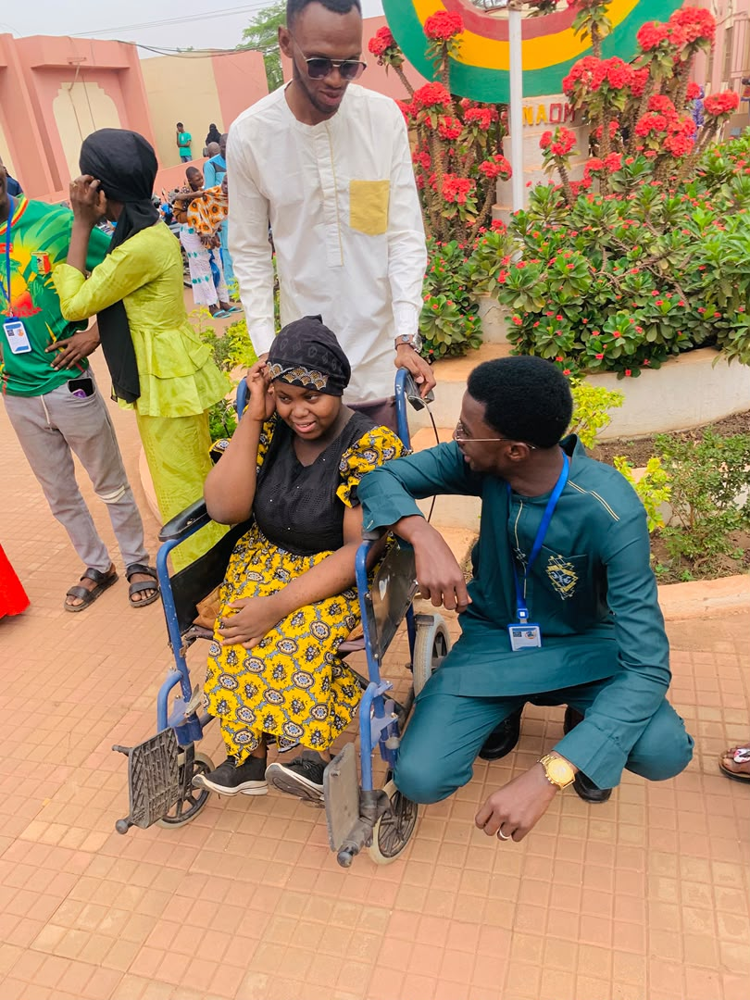
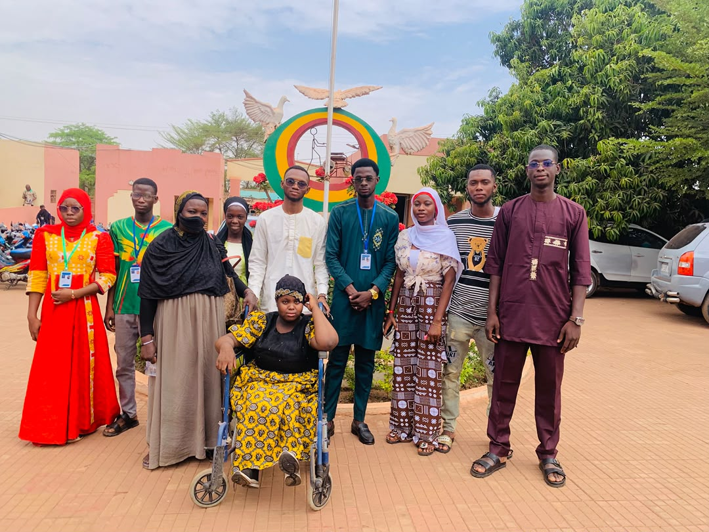
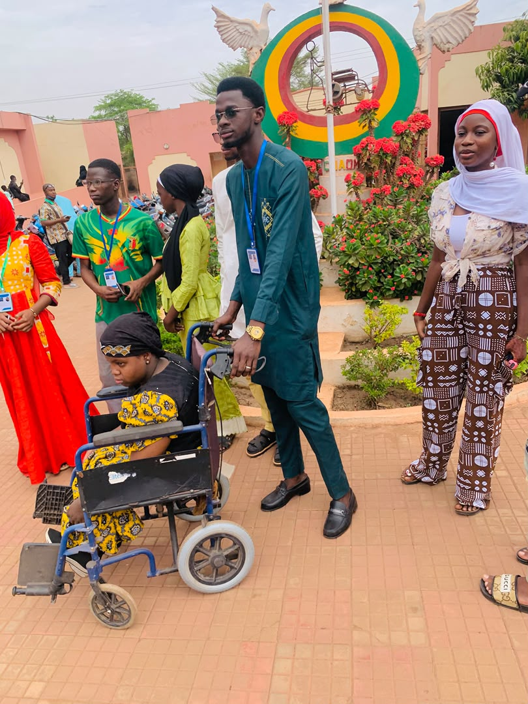
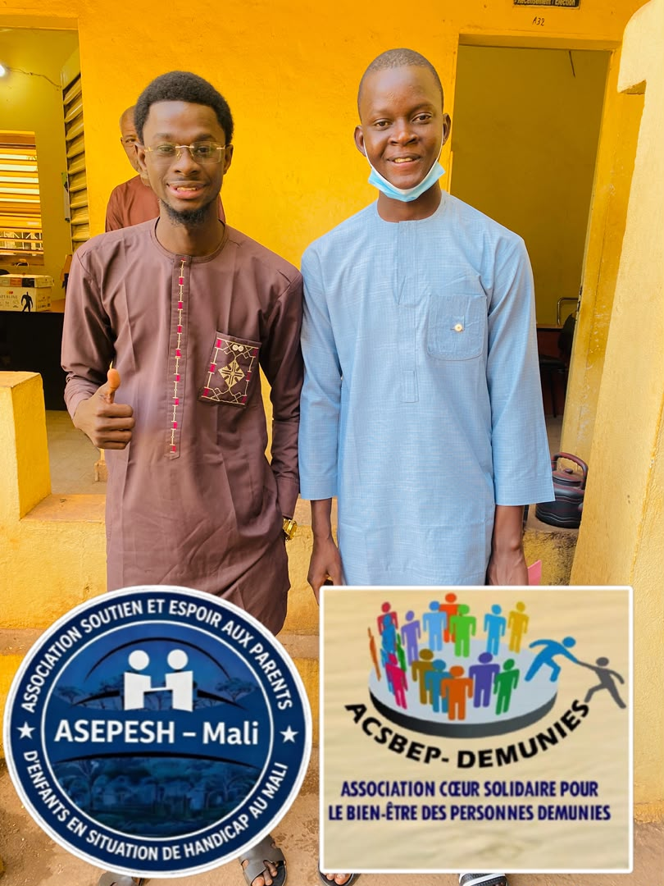
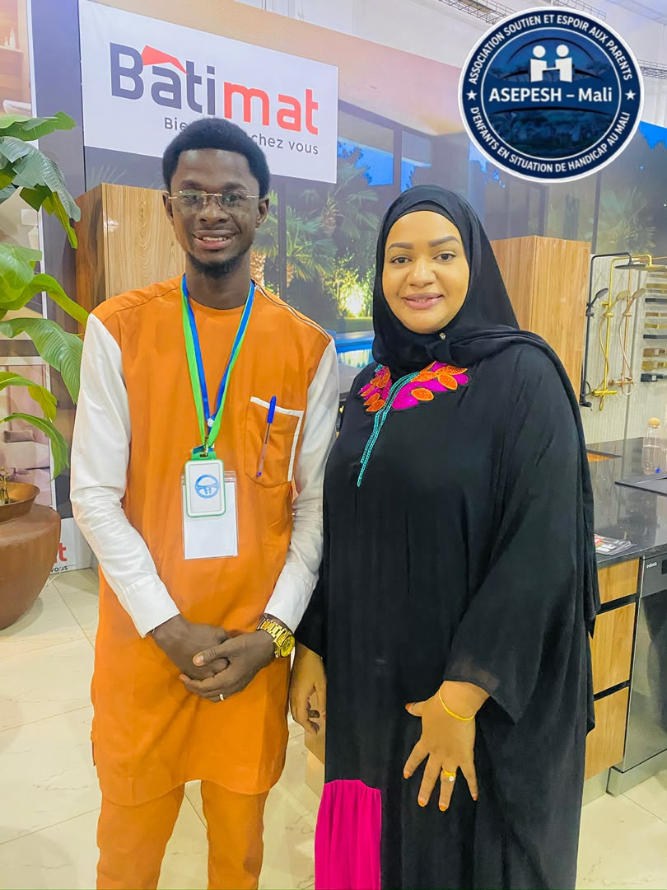
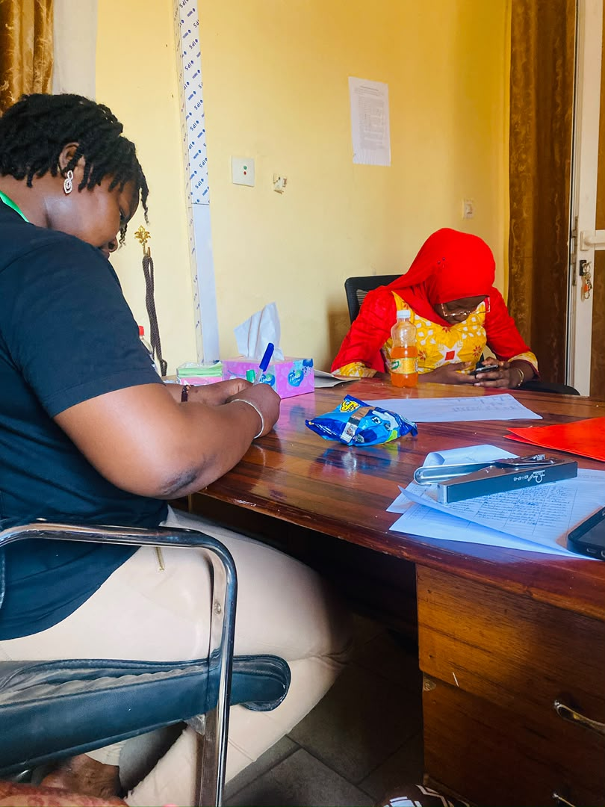

Écouter, accompagner, informer, défendre
Notre stratégie s'articule autour de trois axes, complétés par des séances de soutien psychologique individuel et par un travail de plaidoyer auprès des autorités.
Groupes de parole et rencontres entre parents
C'est le cœur de l'association. Des rencontres régulières réunissent les parents autour d'un même vécu : la fatigue, le regard des autres, les démarches administratives, les questions sans réponse. Chacun parle s'il le souhaite, personne n'est jugé.
- Rencontres animées par des membres formés à l'écoute
- Groupes constitués dans les quartiers, les communes et les régions
- Partage d'expériences concrètes entre familles
- Confidentialité de ce qui se dit dans le groupe


Sensibilisation et information
Beaucoup de familles ignorent les aides auxquelles elles ont droit et les structures qui peuvent les prendre en charge. Nous allons à leur rencontre et nous faisons évoluer le regard porté sur le handicap.
- Information des parents sur leurs droits et sur les ressources existantes
- Orientation vers les services de santé, d'éducation et de protection sociale
- Sensibilisation des communautés pour réduire la stigmatisation
- Diffusion de documents, prospectus, publications et rapports d'activités
Suivi et accompagnement personnalisé des familles
Chaque situation est différente. À côté des groupes, l'association propose des séances de soutien psychologique individuel et un suivi dans la durée, jusqu'à ce que la famille retrouve un équilibre.
- Séances de soutien psychologique individuel
- Accompagnement dans les démarches administratives
- Aide financière ou matérielle apportée selon les besoins
- Suivi régulier assuré par les points focaux
Ce que nous cherchons à changer
Cinq effets recherchés, qui servent de boussole à toutes nos activités.
- 01
Bien-être psychologique
Améliorer le bien-être psychologique des parents, premier levier de tout le reste.
- 02
Fin de l'isolement
Diminuer le sentiment d'isolement en reliant les familles entre elles.
- 03
Connaissance des droits
Une meilleure connaissance des aides et des droits disponibles au Mali.
- 04
Solidarité renforcée
Renforcer la solidarité entre familles concernées par le handicap.
- 05
Charge allégée
Alléger, au moins partiellement, la charge financière qui pèse sur les familles.
Un cap, pas des promesses : les activités sont inscrites au programme annuel, suivies par le bureau national et rendues publiques dans les rapports semestriels et annuels.
Porter la voix des familles auprès des décideurs
L'ASEPESH mène un travail de plaidoyer auprès des autorités politiques et des décideurs pour l'application des textes existants et la ratification d'autres conventions, comme la convention C189 de l'Organisation internationale du travail, en faveur de la protection des enfants en situation de handicap.
- Interpellation des autorités sur l'application effective des textes
- Participation aux rencontres politiques et techniques, au Mali et à l'étranger
- Représentation transparente : chaque missionnaire parle au nom de l'association
- Compte rendu écrit systématique après chaque mission, diffusé aux membres
Missions et partenariats
L'association est régulièrement invitée à des rencontres politiques ou techniques. Chaque mission est préparée, encadrée par un ordre de mission signé, et donne lieu à un rapport écrit dans les 72 heures qui suivent le retour.



Une famille de moins dans le silence
Adhérez, donnez ou rejoignez l'équipe de bénévoles : chaque contribution se traduit sur le terrain.